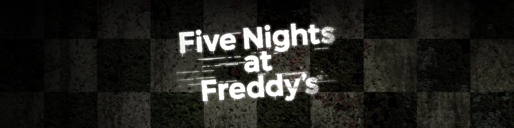
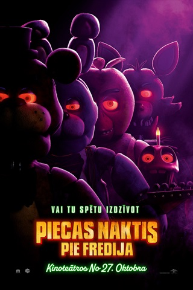
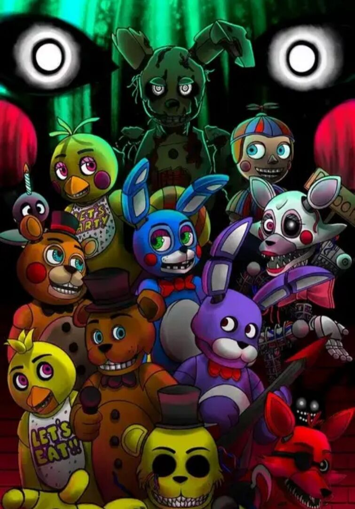

Five Nights at Freddy’s , кратко FNaF — франшиза компьютерных игр, созданная разработчиком игр Скоттом Коутоном.
Основная серия состоит из компьютерных игр, действие которых происходит в местах, связанных с вымышленной пиццерией «Freddy Fazbear’s Pizza», названной так в честь её талисмана — аниматронного медведя Фредди Фазбера. В большинстве игр игрок принимает на себя роль ночного сотрудника, который должен использовать такие средства, как камеры наблюдения, светильники, двери и вентиляционные отверстия, чтобы защититься от враждебных аниматронных персонажей, населяющих локации. История серии постепенно раскрывается с помощью голосовых записей, мини-игр и «пасхальных яиц», встречающихся в играх.

По франшизе было выпущено 22 книги: 3 новеллы (Five Nights at Freddy’s: The Silver Eyes, Five Nights at Freddy’s: The Twisted Ones и Five Nights at Freddy’s: The Fourth Closet), руководство по прохождению в трёх версиях и творческая тетрадь журнала по выживанию Five Nights at Freddy’s: Survival Logbook, серия книг Fazbear Frights (состоящая из 12 книг), а также графические версии новелл. Также планируется выход 9 книг новой линии рассказов — Tales from the Pizzaplex, версия Fazbear Frights в виде графического романа, руководство по игре Security Breach и раскраски. Кроме этого, по франшизе снят фильм «Пять ночей с Фредди», и существует реальный аттракцион в Лас-Вегасе. Франшиза вошла в геймерскую книгу рекордов Гиннесса, как серия игр, у которой за год вышло самое большое количество сиквелов.История и разработка
Идея игры появилась у Скотта Коутона из-за плохих отзывов к его прошлой игре «Chipper & Sons Lumber Co.», где главного персонажа-бобра сочли похожим на страшное животное-робота[1]. Разочаровавшийся Коутон, который ранее в основном разрабатывал христианские игры, в конце концов решил специально сделать что-то страшное, так зародилась серия игр Five Nights at Freddy’s.
Коутон делал всё сам, используя для создания игр Clickteam Fusion 2.5 и Autodesk 3ds Max для создания графики. Но для FNaF World, Sister Location и Pizzeria Simulator он пригласил профессиональных актёров озвучки, а также планирует для выпусков на консоли дать право переделать игры другим людям.
По франшизе, кроме игр, существуют книги, мерчандайз и выпущен полнометражный фильм.